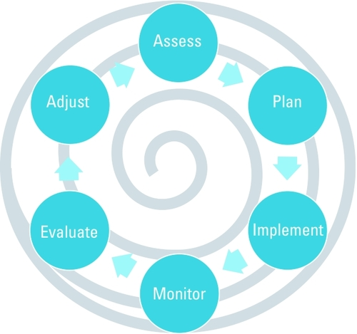
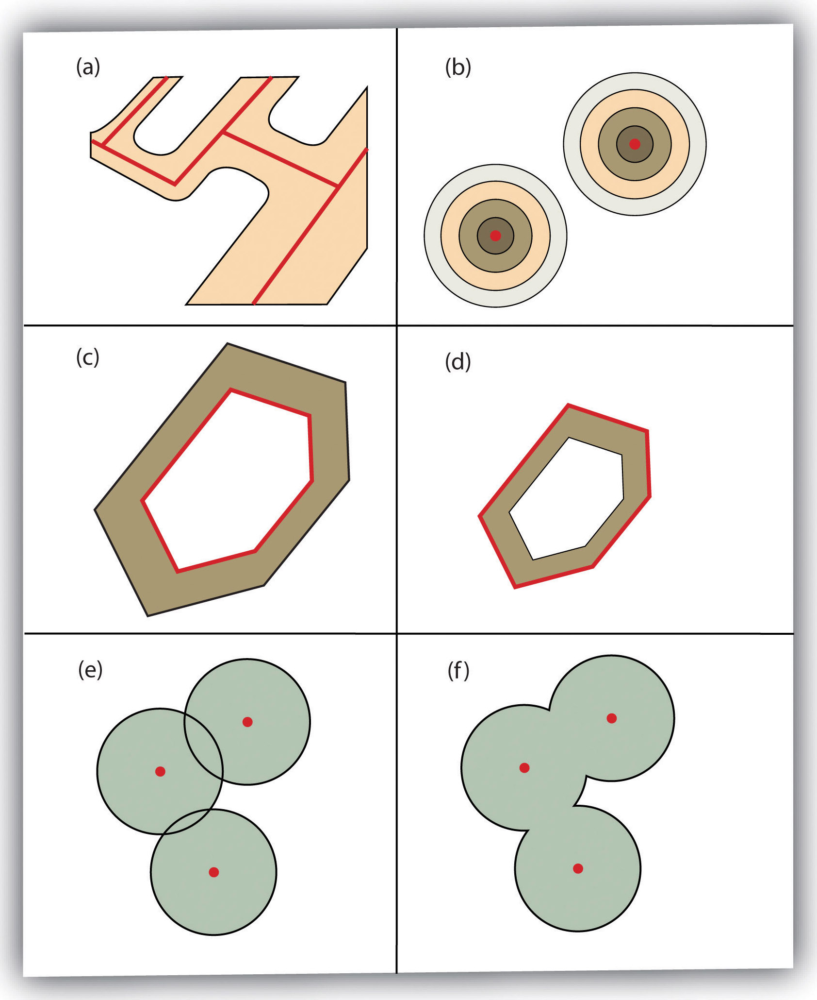
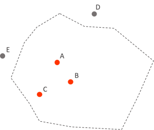
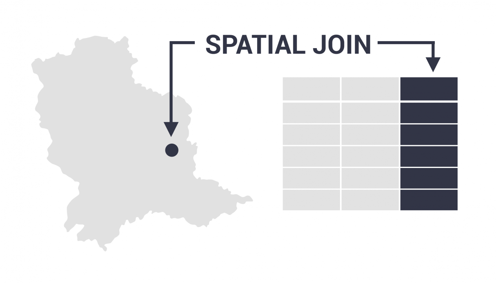
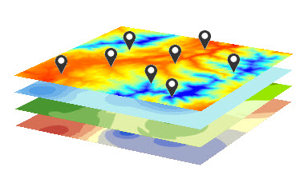

Geospatial
Visualization
Visualization
School
of
Architecture
of
Architecture
Urban Resilience
- Ecological Resilience (Holling 1973)
- ... persistence of relationships in a system, ... and ability of system to absorb changes in state variables, driving variables, and parameters and still exist ...
- ... a measure of the amount of disturbance a system can take before collapsing into an alternate configuration ...
- Leads to Adaptive Management Cycles
Adaptive Management

Where do maps fit in this cycle?
Urban Resilience
Urban resilience is the capacity of a city’s systems, businesses, institutions, communities, and individuals to survive, adapt, and grow, no matter what chronic stresses and acute shocks they experience.
The Wikipedia entry on Urban Resilience also has good definitions and resources.
What GIS data can we use to measure, analyze, or understand Urban Resilience??
Data for Urban Resilience
Physical
- Climate
- temperature
- air pollution
- rainfall
- Geology
- foundation conditions
- unique or valuable deposits
- Physiography
- slope
- riparian habitat
- surface drainage
- Hydrology
- aquifers
- drainage basins
- recharge zones
Values
- Scenic
- forests
- features
- riparian
- beaches
- Development
- commercial
- residential
- industrial
- resource extraction
- Conservation
- endangered species
- endemic species
- water
- soil
Land Use
- Urban Zoning
- residential
- commercial
- industrial
- recreational
- Historic
- buildings
- cultural sites
- educational
- Recreational
- active
- passive
- Conservation
- animal habitats
- ecosystems
- surface drainage
Three [ 5 ] things we do with computers
- [ load ]
- Select
- Manipulate
- Save
- [ repeat ]
Joins : or how to put data in a conversation
- Vector - Vector
- contains: points or lines to polygon
- within: polygon attributes to points or lines
- intersects: vector attributes to polygons, points, or lines
- Vector - Raster
- extraction: raster to points (i.e. elevation to tree locations)
- zonal statistics/histograms: raster to polygons (i.e. avg, max, and min elevation within property boundary)
- Raster - Raster
- Raster math or raster algebra
- tool: raster calculator
Perhaps convert or aggregate before join
- Vector to Vector
- buffer: distance from vector feature
- dissolve: combine features based on common attribute
- intersect, union, buffer, difference: mostly polygons and some lines
- Vector - Raster
- interpolation: vector to raster (fills in pixels between with estimated values)
- rasterize: points lines or polygons to raster (no estimation)
- Raster - Vector
- polygonize: raster to vector (draws polygons of raster features)
- Raster - Raster
- resample: change pixel dimension
- crop/clip: reduce coverage of raster
Attribute Statistics and Aggregation
- Basic column statistics available in GIS
- Basic aggregation tools available in GIS
- Sometimes you need to take results to other program
- export attribute table
- Python, STATA, R, Excel, other ...
So Many Tools ....
Vector Analysis
- Vector Operations (one layer)
- Vector Operations (two layers)
Spatial Join - Attribute Statistics & Aggregation
One Layer Vector Operations
- Buffer
- Dissolve
- Transformations (vector to raster)
- Convex Hull
- Centroids
- Transformations (polygon to line or vice versa)
- Voroni Polygons (fill plane from points)
One Layer Vector Operations - Buffer
- ring buffer (one radius)
- multiple-ring buffer (several radii)
More Buffers
- variable width
- multiple ring
- doughnut
- setback
- non-dissolved
- dissolved

One Layer Vector Operations - Dissolve
- combines features based on attribute
- useful for data aggregation
- useful for cartography
- multiple line segments with same label (roads)
- remove duplicate polygon labels for area
Two Layer Vector Operations
** Spatial Join **
** Spatial Join **
- Points in Polygon
- Intersect
- Join Attributes by Location
- Union
- Clip
- Difference
Points in Polygon
Simple Spatial Join
Simple Spatial Join
- one point layer and one polygon layer
- counts number of points in polygon
- point attribute aggregation possible > polygons
- New "COUNT" column in polygon attributes

Intersect two layers
- Can be lines or polygons
- Boundaries from both layers
- Attributes from both layers
- May need to dissolve after to make sense of analysis

Join Attributes by Location

image from: https://gisgeography.com/spatial-join/
Join Attributes by Location
** Spatial Join **
** Spatial Join **
- combines attributes based on shared locations
- points in polygon)
- intersection
- other ...
- example: attach tract ID to point data
- example: summarize point data and attach to polygon
image from: https://gisgeography.com/spatial-join/
Join Attributes by Location
raster to vector or vice versa
raster to vector or vice versa
- Add attribute to vector data based on underlying raster values
Often call "extraction" or "extract" - Basic statistics from pixels inside polygon (review)
Often called "Zonal Statistics" or "Zonal Histogram"
Excercises
- Polygon contains points
- Points within polygon
- Extract from raster at point
Spatial Join - TRI sites (points) in Census Tracts (polygons)
What FL census tracts have most TRI sites?
- Get data from box folder (data management!)
- 2021_MD_CensusTracts_tiger.zip
- tri_2020_fl.csv
- New project in ArcGIS Pro (or Q) and add both layers
- Display x/y data for the TRI layer (projection!)
- Spatial Join
- Target layer/features: tracts
- Join features: tri
- Join operation: one to one (keep all target features)
- *New Layer*: tracts_tri
- Match option: contains
- Symbolize census tracts, remember:
- Graduated (on join count)
- kind of classification and number of breaks matters
Spatial Join - Census Tracts (polygons) to TRI sites (points)
What census tract is each TRI site in?
- Same data as previous
- New (or same) project in ArcGIS Pro (or Q) and add both layers
- Display x/y data fro the TRI layer (projection!)
- Spatial Join
- Target layer/features: TRI
- Join features: tracts
- Join operation: one to many (keep all target features)
- *New Layer*: tri_tracts
- Match option: within
- Open attribute table and explore:
- This enables statistical analysis for the TRI layer as related to census tracts
Spatial Join - Extract elevation (raster) to trees (points)
What is the elevation of each tree?
- Get data from box folder (data management!)
- UM_DEM_2021_5FT.tif
- UM_trees_20221004.zip
- New (or same) project in ArcGIS Pro (or Q) and add both layers
- Find "Extract Values to Points" tool in toolbox
- Spatial Join
- Input points: trees
- Input raster: elevation (DEM)
- *New Layer*: trees_elevation
- check "interpolate" and "append" boxes
- Open attribute table and explore:
- This enables statistical analysis for the tree layer
- You can also symbolize trees by elevation